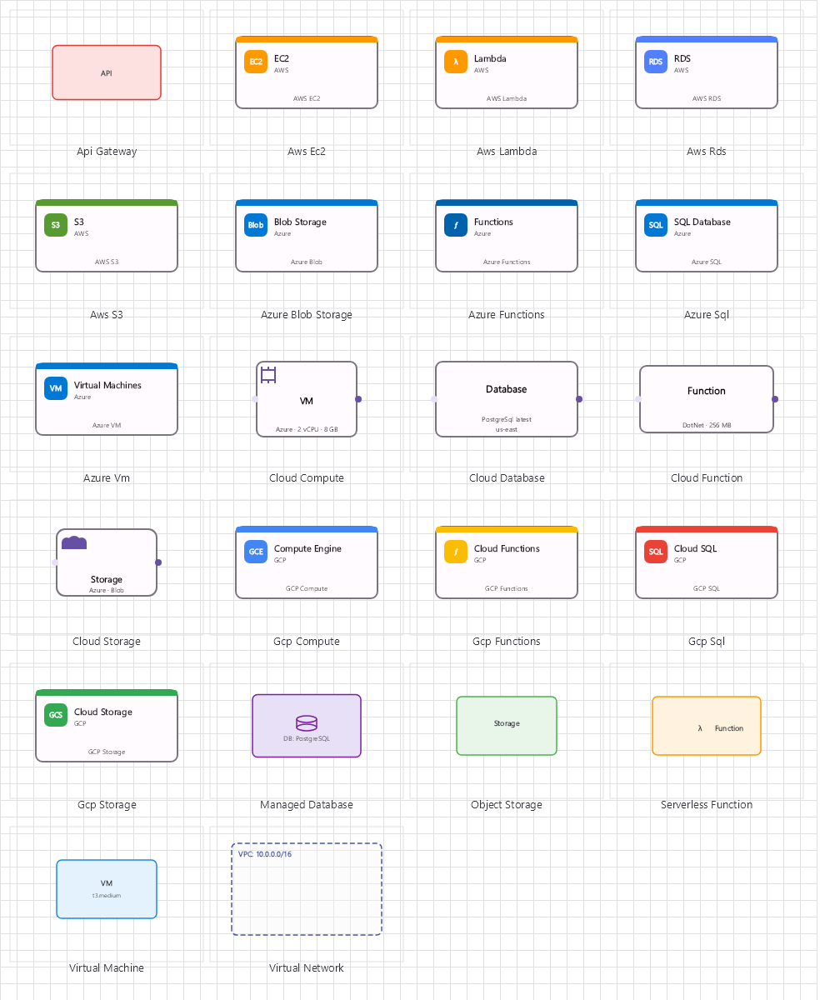

Cloud Architecture Diagram Family
Cloud infrastructure diagrams with storage, compute, function, and database nodes for AWS, Azure, and GCP architecture visualization.

Overview
Base Control: CloudControl : MaterialControl
Namespace: Beep.Skia.Cloud
The CloudControl is the root control for this diagram family. It inherits MaterialControl and provides shared port management, styling, and template methods for all nodes in the family.
This family contains 4 node types.
Node Types
| Node Class | Shape | Description |
|---|---|---|
CloudStorageNode | File/folder bucket icon | Cloud storage service (AWS S3, Azure Blob, GCP Cloud Storage). |
CloudComputeNode | Server/instance icon | Virtual machine/container compute (EC2, Azure VM, Compute Engine). |
CloudFunctionNode | Lambda/function icon | Serverless function (AWS Lambda, Azure Functions, Cloud Functions). |
CloudDatabaseNode | Database cylinder | Managed database service (RDS, Cosmos DB, Cloud SQL). |
CloudStorageNode
Cloud storage service (AWS S3, Azure Blob, GCP Cloud Storage).
| Shape | File/folder bucket icon |
|---|---|
| Input Ports | 1+ |
| Output Ports | 1+ |
CloudComputeNode
Virtual machine/container compute (EC2, Azure VM, Compute Engine).
| Shape | Server/instance icon |
|---|---|
| Input Ports | 1+ |
| Output Ports | 1+ |
CloudFunctionNode
Serverless function (AWS Lambda, Azure Functions, Cloud Functions).
| Shape | Lambda/function icon |
|---|---|
| Input Ports | 1+ |
| Output Ports | 1+ |
CloudDatabaseNode
Managed database service (RDS, Cosmos DB, Cloud SQL).
| Shape | Database cylinder |
|---|---|
| Input Ports | 1+ |
| Output Ports | 1+ |
Connection Points
Every node in this family exposes connection points (ports) for linking to other nodes. Port positions are computed lazily by LayoutPorts(), which runs when MarkPortsDirty() flags the layout as stale after a move or resize.
| Node Class | Input Ports | Output Ports | Extra |
|---|---|---|---|
CloudStorageNode | 1+ | 1+ | — |
CloudComputeNode | 1+ | 1+ | — |
CloudFunctionNode | 1+ | 1+ | — |
CloudDatabaseNode | 1+ | 1+ | — |
Connection Conventions
When building diagrams with this family, follow these conventions:
- Nodes represent cloud services with provider-agnostic shapes
- Connection lines represent data flow, API calls, or network routes
- Properties allow specifying provider, region, SKU, and configuration
Usage Example
Complete example showing creation, node placement, and connection:
C# Example
var cloud = new CloudControl
{
X = 50, Y = 50,
Width = 700, Height = 500
};
drawingManager.AddComponent(cloud);
var storage = new CloudStorageNode
{
X = 100, Y = 100,
Text = "S3 Bucket",
StorageType = "Object Storage"
};
var compute = new CloudComputeNode
{
X = 300, Y = 100,
Text = "EC2 Instance",
InstanceType = "t3.medium"
};
var func = new CloudFunctionNode
{
X = 300, Y = 250,
Text = "Lambda: ProcessImage"
};
var db = new CloudDatabaseNode
{
X = 500, Y = 100,
Text = "RDS PostgreSQL",
EngineType = "PostgreSQL"
};
drawingManager.AddComponent(storage);
drawingManager.AddComponent(compute);
drawingManager.AddComponent(func);
drawingManager.AddComponent(db);
drawingManager.ConnectComponents(storage.OutPoints[0], compute.InPoints[0]);
drawingManager.ConnectComponents(compute.OutPoints[0], db.InPoints[0]);
drawingManager.ConnectComponents(storage.OutPoints[1], func.InPoints[0]);